Blog/Cotes & marché
Conseils · Cotes & marché
Cotes des vins & marché secondaire

Prix, tendances et évolutions par région et millésime. 14 guides pour décrypter le marché aux enchères, comprendre la note Parker et identifier les bouteilles qui ont vraiment de la valeur.
Sommaire
- Guide pilierCotes des vins : comprendre le marché et les prixComment lire une cote, sources de référence, facteurs de valorisation, panorama par région et tendances actuelles du marché aux enchères.
- BordeauxFaire estimer ses vins de Bordeaux : guide completCritères de valorisation, classification, millésimes clés et appellations à repérer pour obtenir une estimation fiable d'une cave de Bordeaux.
- BourgogneEstimation de vins de Bourgogne : ce qu'il faut savoirHiérarchie des appellations, notion de climat, grands domaines et millésimes clés pour évaluer la valeur réelle de vos vins de Bourgogne.
- RhôneFaire estimer ses vins de la Vallée du RhôneRhône Nord et Sud, appellations Crus, grands domaines (Guigal, Chave, Rayas…), millésimes clés et pièges à éviter dans l'estimation.
- JuraVins du Jura : lesquels ont vraiment de la valeur ?Domaines iconiques (Overnoy, Ganevat, Macle, Puffeney), vin jaune, styles recherchés et spécificités de la cote d'une région en pleine montée aux enchères.
- LoireVins de Loire : lesquels ont une vraie cote ?Clos Rougeard, Dagueneau, Huet, monopoles et nouvelle génération : les domaines qui ont vraiment une cote aux enchères — et ce qui ne vaut rien à la revente.
- InternationalVins italiens et espagnols : ont-ils une vraie cote en France ?Sassicaia, Barolo, Vega Sicilia, Pingus : ce que le marché secondaire français valorise vraiment — et ce qui ne vaut rien à la revente.
- NotationComment la note Parker influence la cote d'un vinHistoire, échelle 50-100, effet de seuil 90/100, vignobles sensibles et limites : l'influence réelle de la note Parker sur les prix.
- OutilsArgus des vins : existe-t-il un outil fiable pour connaître la cote de ses bouteilles ?iDealwine, Wine-Searcher, Liv-ex : ce que les outils en ligne disent vraiment, leurs limites, et quand une estimation humaine reste indispensable.
- TendanceVins bio et nature : ont-ils une cote sur le marché secondaire ?Bio, biodynamie, vin nature, Vin de France : ce que le marché secondaire valorise réellement, les domaines cotés et les limites actuelles.
- ChampagneEstimation de champagne : les bouteilles qui ont de la valeurCuvées de prestige (Krug, Dom Pérignon, Cristal, Salon, Bollinger VVF), vignerons cultes (Selosse, Prévost), millésimes clés et pièges à éviter.
- RecordsLes vins les plus chers du monde : classement et explicationRecords d'enchères Sotheby's et Christie's, Romanée-Conti 1945, Cheval Blanc 1947, champagnes du Jönköping — et les 5 facteurs qui font ces prix.
- ComprendreQue faire de vieilles bouteilles de vin retrouvées dans une cave ?Méthode en 4 étapes pour identifier, évaluer et décider du sort de bouteilles oubliées dans une cave — sans rien gâcher.
- Étude de casMouton Rothschild : quels millésimes garder, lesquels vendre ?Exemple de rapport d'estimation : estimation par millésime (1945 à 2017) et reco garder / vendre, bouteille par bouteille.
Explorer les autres thèmes
L'audit complet
Prêt à connaître la valeur de votre cave ?
Audit indépendant à distance, rapport PDF complet et cote actuelle de chaque bouteille, sans déplacement.
Faire estimer ma cave